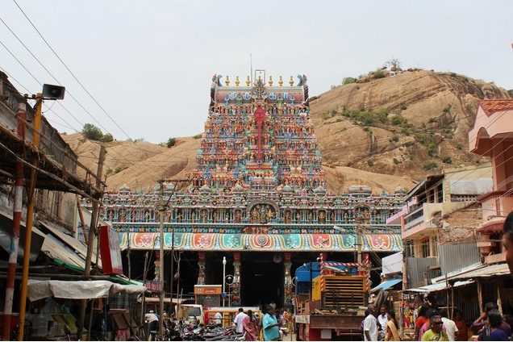

Thiruparankundram Murugan Temple
Thiruparankundram Murugan Temple is situated on the outskirts of Madurai City of Tamilnadu, which is mainly known for the deity Lord Murugan. Thiruparankundram is the first among the six abodes (Arupadai Veedu Temples) of Lord Murugan. This is the place which is associated with the divine marriage of Lord Murugan with Goddess Deivanai and so it is considered as a sacred place for marriages.
Tirupuramkundram is one of the six main pilgrimage sites for the devotion of the son of Shiva - Muruga(also Subramanya),Tamil Hindu god of war and patron of Tamil Nadu.According to legend, the Lord married Deivyani, the daughter of Lord Indra at this place.The Tirupuramkundram Temple, Madurai dates back to the sixth century.The antiquity of Tirupuramkundram Temple can very well be gauged from the fact that it finds mention even in the Sangam Literature. According to another tale King Harichandra worshipped Shiva from this hillock and gained eternal wisdom. Thus he built a temple here - temple was complete with Praharams (ambulatories), walls, Gopurams (gate towers) and steps. The "real history" (who can differentiate myths and reality in Indian past?) of the temple may start with 8th century AD when Pandya rulers built rock-cut temple. Later, during the reign of Nayaks of Madurai (1559 - 1736 AD) the temple was supplemented with beautiful gopurams and beautified. There was built extensive and beautiful front part (mugha mandapam) with 48 ornate pillars carved during the rule of Pandya and Nayaks.
It is possible that the worship history of this hill goes far into the past, may be even well before there appeared Hinduism. There are many legends associated with this mountain. Thus, the hill is considered to be the "Southern Himalaya" where the gods assemble. There is also legend that this is the place where Sun and Moon take a rest. Thiruparankundram Arulmigu Subramaniya Swamy Thirupparamkunram Murugan Temple, one
Share This Website